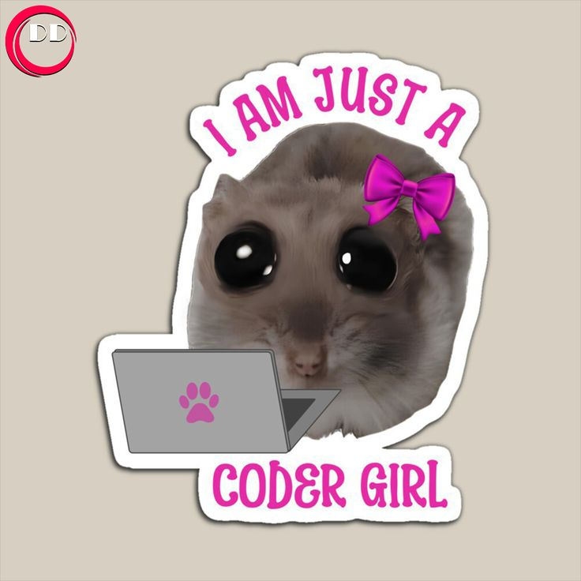
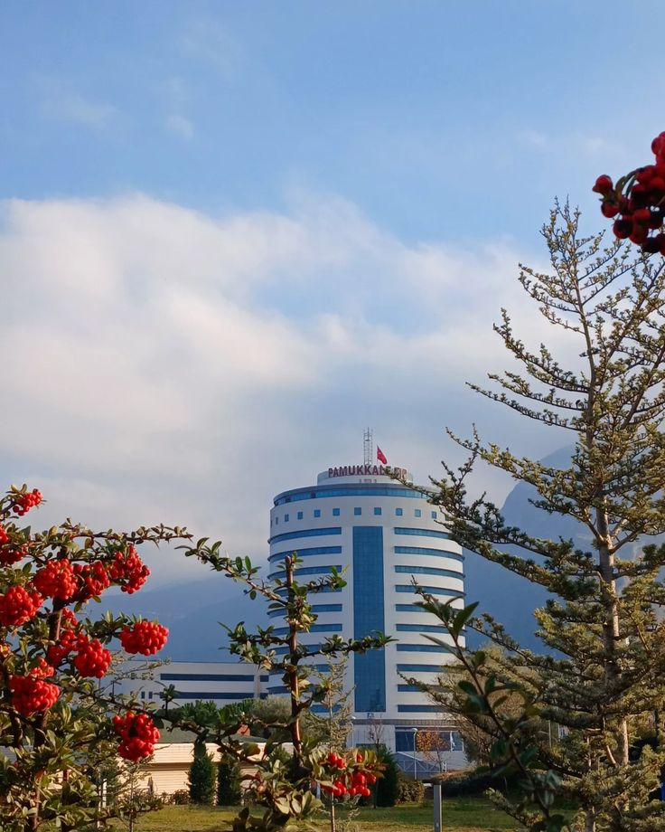
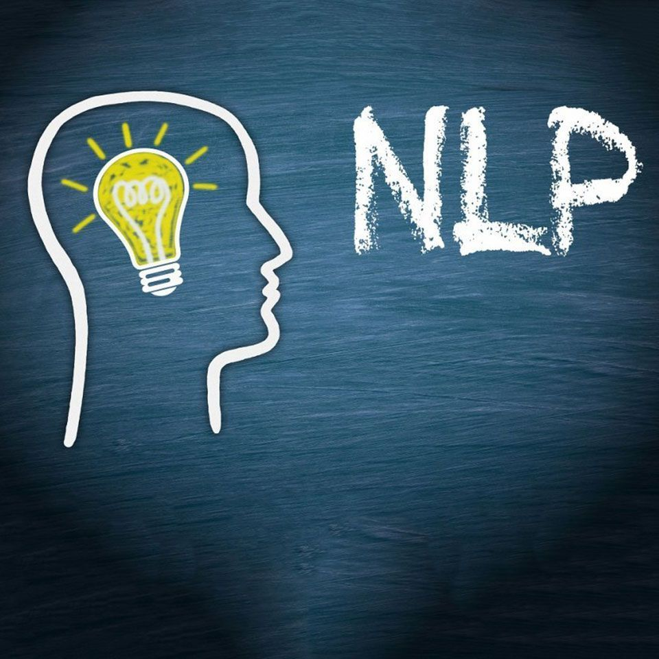
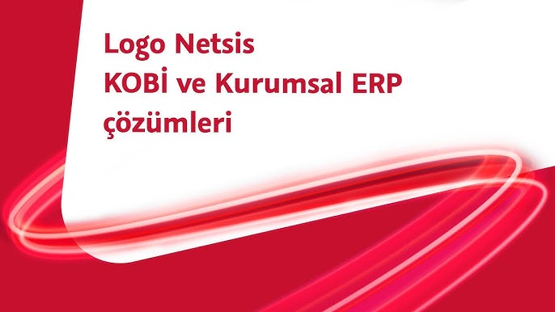
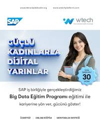
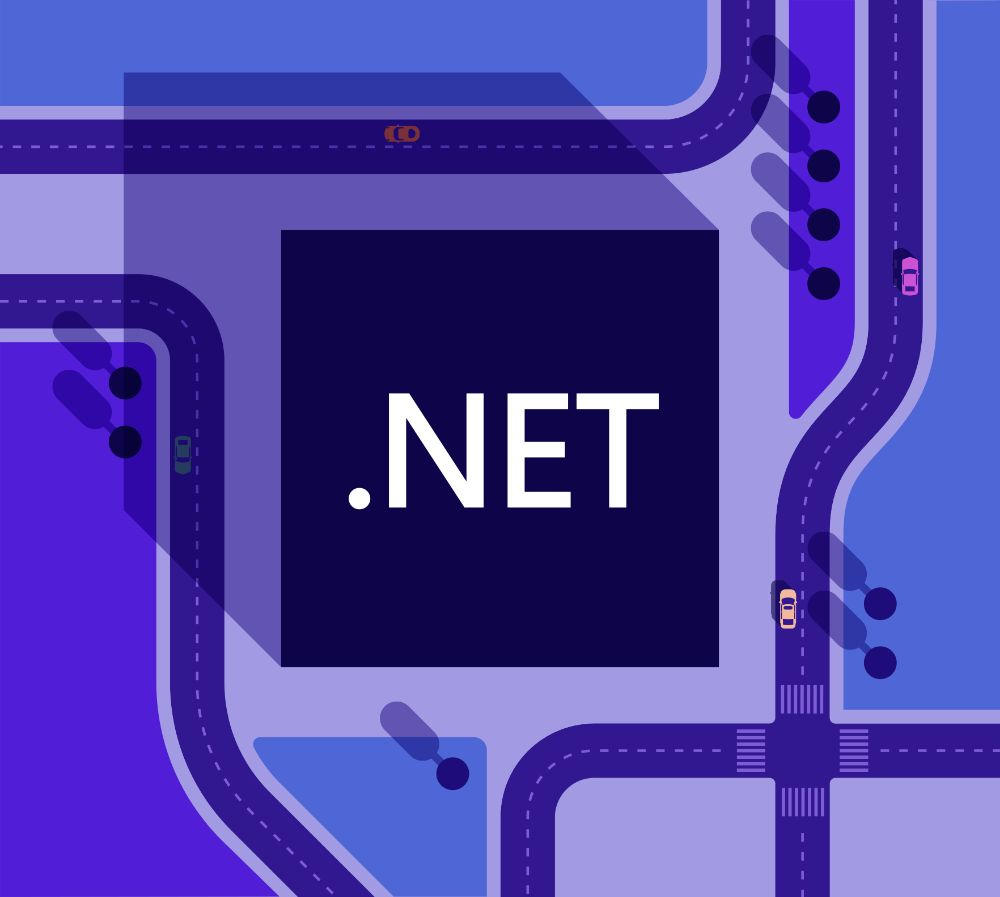

Pamukkale Üniversitesi öğrencisiyim. Backend development, veri madenciliği, Türkçe duygu analizi ve doğal dil işleme alanlarında projeler geliştiriyorum. Özellikle .NET, C#, Python ve veri odaklı uygulamalar üzerine çalışıyorum.
İlgi Alanlarım
Backend Development
Doğal Dil İşleme (NLP)
Veri Madenciliği ve Analiz
Web Scraping ve Veri Toplama
Aldığım eğitimler ve kendimi geliştirdiğim çalışmalar





Çalışmalarımla ilgili örnek geri bildirimler
Bana bu platformlar üzerinden ulaşabilirsiniz.
Akademik Disiplin
Selin, araştırma süreçlerini planlı ilerleten ve teknik konuları anlaşılır şekilde sunabilen başarılı bir öğrencidir.
Teknik Gelişim
Backend geliştirme ve veri analizi alanındaki çalışmaları, kısa sürede güçlü bir teknik altyapı oluşturduğunu gösteriyor.
Proje Yetkinliği
Gerçek problem odaklı projelerde çözüm üretme yaklaşımı ve öğrenme isteği oldukça etkileyici.